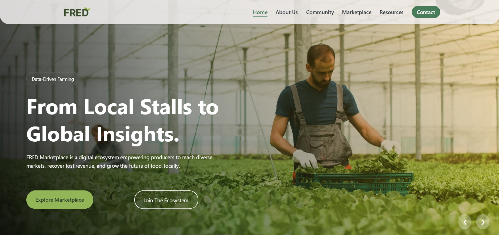

Agri-tech platform

- HTML
- CSS
- JavaScript
- Git & GitHub
- Design system
Featured · Front-end development
FRED Platform
My role: Front-end developer. I worked within the sage-green brand design system and managed changes through Git and GitHub.
An agri-tech platform connecting Canadian farmers with buyers, investors, and research partners. I built several of its interactive sections: a Past Webinars modal, a LinkedIn posts feed, an FAQ accordion, and a full contact page.
Visit the site